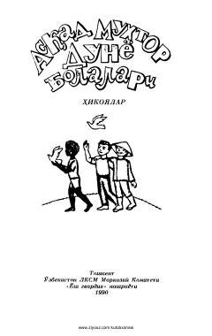

DBTurli xalqlar bolalarining hayoti va kechinmalari haqidagi ibratli hikoyalar to'plami.
Ushbu kitob taniqli o'zbek yozuvchisi Asqad Muxtor qalamiga mansub hikoyalar to'plamidir. Asarda turli xalqlar va madaniyatlar vakili bo'lgan bolalarning hayoti, kechinmalari va dunyoqarashi badiiy tilda tasvirlangan.